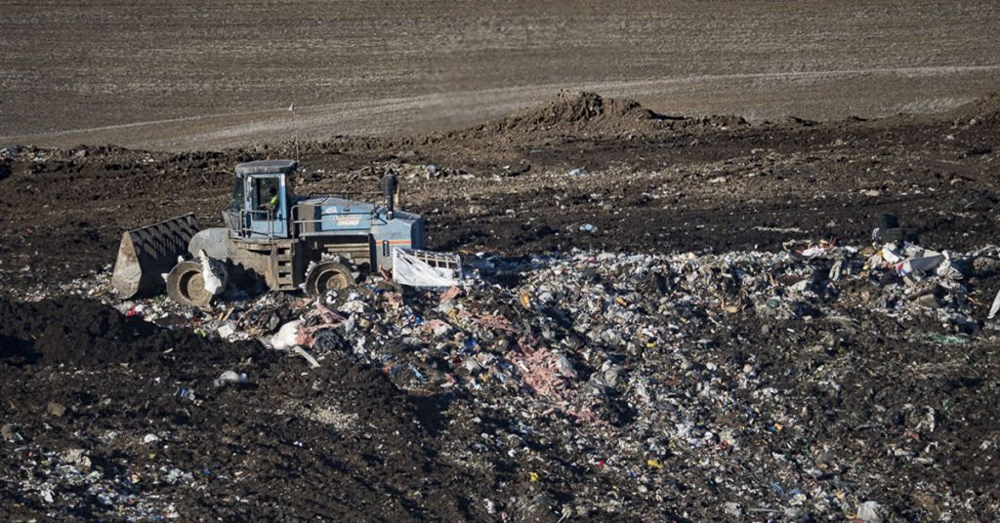

Introduction

Anticipating when does an aluminium melting furnance requires maintenance can save up to 20000 USD in an hour. This is because knowing about the maintenance time beforehand saves up to 30 minutes of downtime, 1 hour of maintenance which is equivalent of approximately 16000 USD on average. In addition, it incurs extra cost of 250 dollars per hour to accommodate labor on a short notice. Further it affects the production cycle down the line and results in the delay of product delivery. One immediate solution is to increase the frequency of maintenance, however, it will result in increased downtimes and labor cost. This is why timely intimation of maintenance cycles is critical for Aluminum businesses. The goal of the project is to determine maintenance cycle of the Aluminum melting furnaces using machine learning.
Aluminium recycling is a profitable business, both for the environment and the industry. According to the aluminum association[1], almost 75% of all aluminium is in use today. Recycling a single can of aluminium saves enough energy to listen to a full album on an Ipod. One of the most elementary steps in recycling aluminium is decoating. It is a process of removing any kinds of coatings, paints, lacquers as well as other organic contaminants and humidity from the scrap. This helps in obtaining high quality pre-treatment material that is constructive in high yield. Aluminium dross is generated as a byproduct of this process.

Aluminum dross is a hazardous solid waste in aluminum production industries has caused serious environmental and public health challenges. It is highly flammable, irritant and if inhaled or swallowed or penetrate the skin cause health problems. It is estimated that each metric ton of the dross produces twelve metric tons of gaseous emissions some of which are explosive, toxic and stinky[2]. Dross is disposed using landfills which pose of a risk of intoxication of ground water and soil. Consuming water containing these contaminants can result in headaches, insomnia, weakness in the legs and even nervous-system disorders, at high concentrations. For 100 kg of molten aluminum, an average of about 20 kg aluminum dross is generated. The aluminium industry delivers roughly around 3 million tonnes of waste dross to the environment as pollution. Furnaces with on-the-spot maintenance have a higher probability to produce larger levels of aluminium dross and it exacerbates the problem of handling dross. Hence, cutting down dross levels by predicting the maintenance cycle in furnace can be significant tool for the industry.